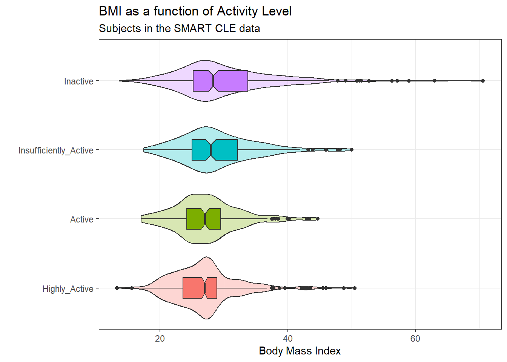
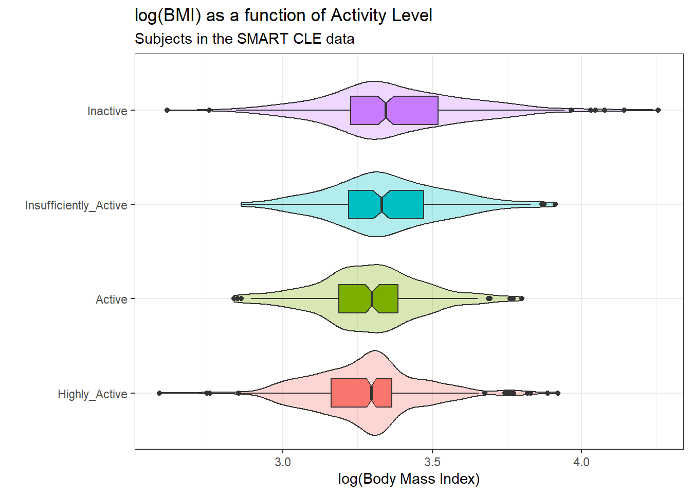
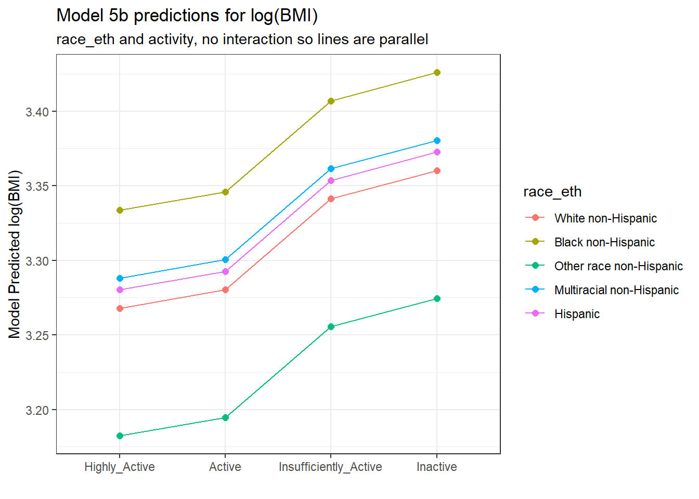
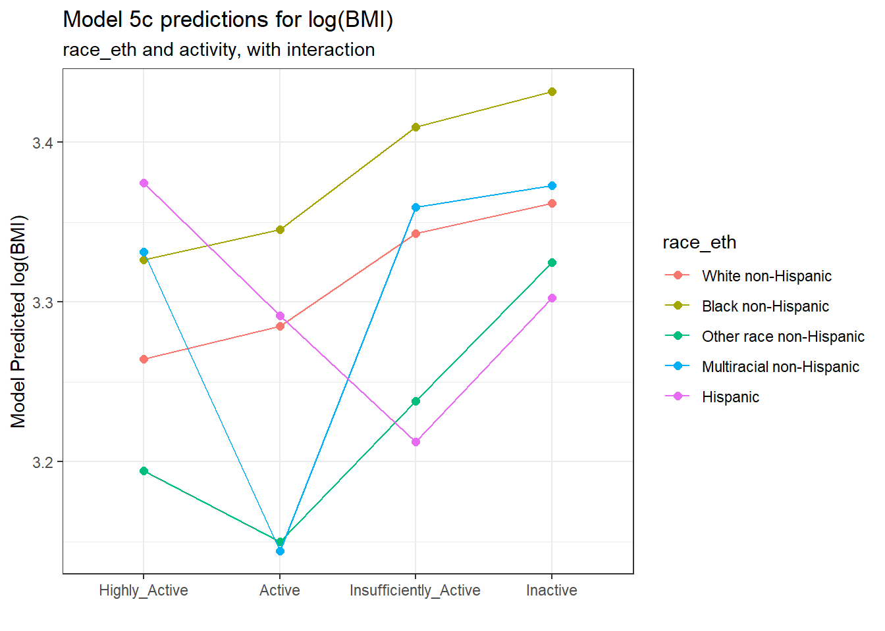
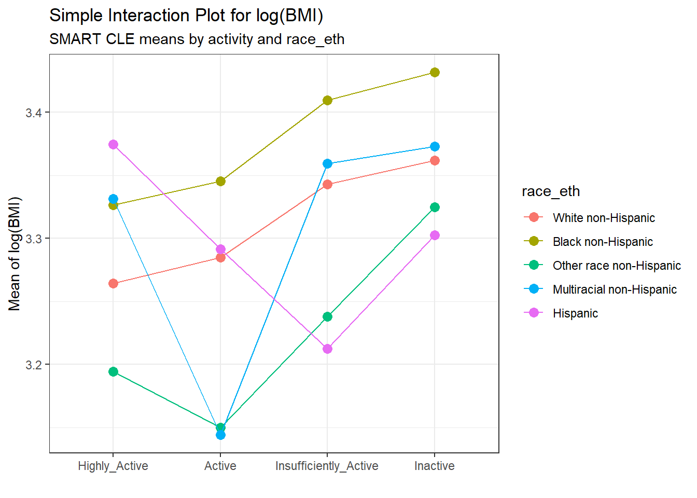
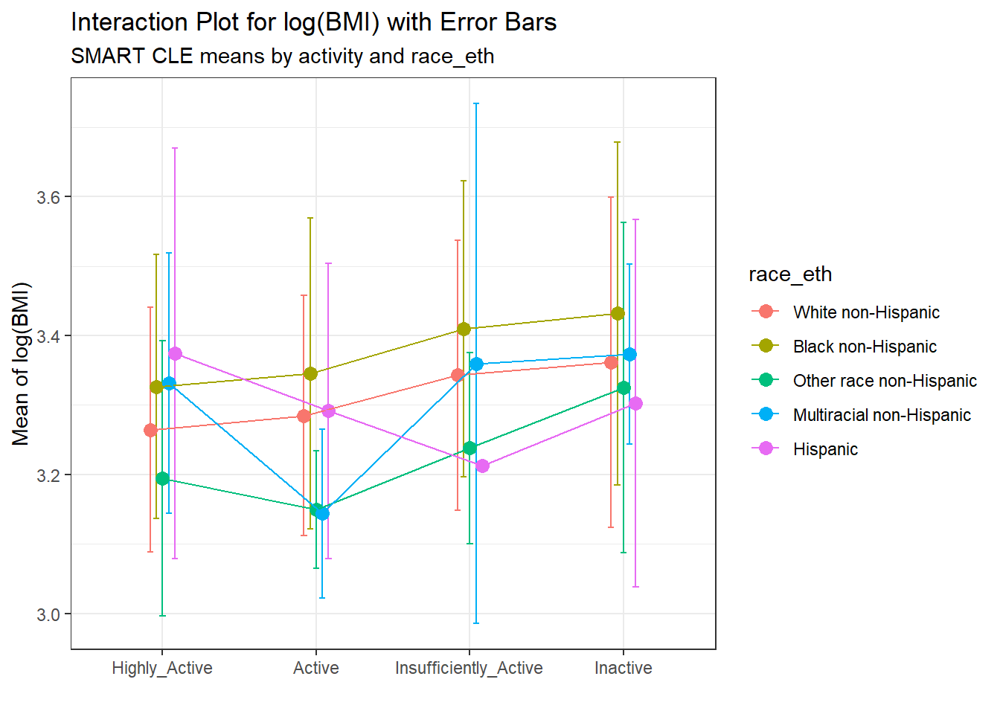

knitr::opts_chunk$set(comment = NA)
library(janitor)
library(broom)
library(knitr)
library(mosaic)
library(tidyverse)
theme_set(theme_bw())9 Analysis of Variance with SMART
In this chapter, we’ll work with the smart_cle1_sh data file again.
9.1 R Setup Used Here
9.1.1 Data Load
smart_cle1_sh <- read_rds("data/smart_cle1_sh.Rds")The variables we’ll look at in this chapter are as follows.
| Variable | Description |
|---|---|
SEQNO |
respondent identification number (all begin with 2016) |
bmi |
Body mass index, in kg/m2 |
female |
Sex, 1 = female, 0 = male |
smoke100 |
Have you smoked at least 100 cigarettes in your life? (1 = yes, 0 = no) |
activity |
Physical activity (Highly Active, Active, Insufficiently Active, Inactive) |
drinks_wk |
On average, how many drinks of alcohol do you consume in a week? |
physhealth |
Now thinking about your physical health, which includes physical illness and injury, for how many days during the past 30 days was your physical health not good? |
9.2 A One-Factor Analysis of Variance
We’ll be predicting body mass index, at first using a single factor as a predictor: the activity level.
9.2.1 Can activity be used to predict bmi?
ggplot(smart_cle1_sh, aes(x = activity, y = bmi,
fill = activity)) +
geom_violin(alpha = 0.3) +
geom_boxplot(width = 0.3, notch = TRUE) +
guides(fill = "none") +
coord_flip() +
labs(title = "BMI as a function of Activity Level",
subtitle = "Subjects in the SMART CLE data",
x = "", y = "Body Mass Index")
Here’s a numerical summary of the distributions of bmi within each activity group.
favstats(bmi ~ activity, data = smart_cle1_sh) activity min Q1 median Q3 max mean sd
1 Highly_Active 13.30 23.6275 26.99000 28.930 50.46 27.02253 5.217496
2 Active 17.07 24.2400 27.06930 29.520 44.67 27.36157 5.151796
3 Insufficiently_Active 17.49 25.0500 27.93776 32.180 49.98 29.04328 6.051823
4 Inactive 13.64 25.2150 28.34000 33.775 70.56 30.15978 7.832675
n missing
1 428 0
2 173 0
3 201 0
4 331 09.2.2 Should we transform bmi?
The analysis of variance is something of a misnomer. What we’re doing is using the variance to say something about population means. In light of the apparent right skew of the bmi results in each activity group, might it be a better choice to use a logarithmic transformation? We’ll use the natural logarithm here, which in R, is symbolized by log.
ggplot(smart_cle1_sh, aes(x = activity, y = log(bmi),
fill = activity)) +
geom_violin(alpha = 0.3) +
geom_boxplot(width = 0.3, notch = TRUE) +
guides(fill = "none") +
coord_flip() +
labs(title = "log(BMI) as a function of Activity Level",
subtitle = "Subjects in the SMART CLE data",
x = "", y = "log(Body Mass Index)")
The logarithmic transformation yields distributions that look much more symmetric in each activity group, so we’ll proceed to build our regression model predicting log(bmi) using activity. Here’s the numerical summary of these logged results:
favstats(log(bmi) ~ activity, data = smart_cle1_sh) activity min Q1 median Q3 max mean
1 Highly_Active 2.587764 3.162411 3.295466 3.364879 3.921181 3.279246
2 Active 2.837323 3.188004 3.298400 3.385068 3.799302 3.292032
3 Insufficiently_Active 2.861629 3.220874 3.329979 3.471345 3.911623 3.348383
4 Inactive 2.613007 3.227439 3.344274 3.519721 4.256463 3.376468
sd n missing
1 0.1851478 428 0
2 0.1850568 173 0
3 0.2007241 201 0
4 0.2411196 331 09.2.3 Building the ANOVA model
model_5a <- lm(log(bmi) ~ activity, data = smart_cle1_sh)
model_5a
Call:
lm(formula = log(bmi) ~ activity, data = smart_cle1_sh)
Coefficients:
(Intercept) activityActive
3.27925 0.01279
activityInsufficiently_Active activityInactive
0.06914 0.09722 The activity data is categorical and there are four levels. The model equation is:
log(bmi) = 3.279 + 0.013 (activity = Active)
+ 0.069 (activity = Insufficiently Active)
+ 0.097 (activity = Inactive)where, for example, (activity = Active) is 1 if activity is Active, and 0 otherwise. The fourth level (Highly Active) is not shown here and is used as a baseline. Thus the model above can be interpreted as follows.
activity |
Predicted log(bmi) |
Predicted bmi |
|---|---|---|
| Highly Active | 3.279 | exp(3.279) = 26.55 |
| Active | 3.279 + 0.013 = 3.292 | exp(3.292) = 26.90 |
| Insufficiently Active | 3.279 + 0.069 = 3.348 | exp(3.348) = 28.45 |
| Inactive | 3.279 + 0.097 = 3.376 | exp(3.376) = 29.25 |
Those predicted log(bmi) values should look familiar. They are just the means of log(bmi) in each group, but I’m sure you’ll also notice that the predicted bmi values are not exact matches for the observed means of bmi.
smart_cle1_sh |> group_by(activity) |>
summarise(mean(log(bmi)), mean(bmi))# A tibble: 4 × 3
activity `mean(log(bmi))` `mean(bmi)`
<fct> <dbl> <dbl>
1 Highly_Active 3.28 27.0
2 Active 3.29 27.4
3 Insufficiently_Active 3.35 29.0
4 Inactive 3.38 30.29.2.4 The ANOVA table
Now, let’s press on to look at the ANOVA results for this model.
anova(model_5a)Analysis of Variance Table
Response: log(bmi)
Df Sum Sq Mean Sq F value Pr(>F)
activity 3 2.060 0.68652 16.225 2.496e-10 ***
Residuals 1129 47.772 0.04231
---
Signif. codes: 0 '***' 0.001 '**' 0.01 '*' 0.05 '.' 0.1 ' ' 1- The total variation in
log(bmi), our outcome, is captured by the sums of squares here. SS(Total) = 2.058 + 47.770 = 49.828 - Here, the
activityvariable (with 4 levels, so 4-1 = 3 degrees of freedom) accounts for 4.13% (2.058 / 49.828) of the variation inlog(bmi). Another way of saying this is that the model \(R^2\) or \(\eta^2\) is 0.0413. - The variation accounted for by the
activitycategories meets the standard for a statistically detectable result, according to the ANOVA F test, although that’s not really important. - The square root of the Mean Square(Residuals) is the residual standard error, \(\sigma\), we’ve seen in the past. MS(Residual) estimates the variance (0.0423), so the residual standard error is \(\sqrt{0.0423} \approx 0.206\).
9.2.5 The Model Coefficients
To address the question of effect size for the various levels of activity on log(bmi), we could look directly at the regression model coefficients. For that, we might look at the model summary.
summary(model_5a)
Call:
lm(formula = log(bmi) ~ activity, data = smart_cle1_sh)
Residuals:
Min 1Q Median 3Q Max
-0.76346 -0.12609 -0.00286 0.11055 0.88000
Coefficients:
Estimate Std. Error t value Pr(>|t|)
(Intercept) 3.279246 0.009943 329.806 < 2e-16 ***
activityActive 0.012785 0.018532 0.690 0.49
activityInsufficiently_Active 0.069137 0.017589 3.931 8.99e-05 ***
activityInactive 0.097221 0.015056 6.457 1.58e-10 ***
---
Signif. codes: 0 '***' 0.001 '**' 0.01 '*' 0.05 '.' 0.1 ' ' 1
Residual standard error: 0.2057 on 1129 degrees of freedom
Multiple R-squared: 0.04133, Adjusted R-squared: 0.03878
F-statistic: 16.22 on 3 and 1129 DF, p-value: 2.496e-10If we want to see the confidence intervals around these estimates, we could use
confint(model_5a, conf.level = 0.95) 2.5 % 97.5 %
(Intercept) 3.25973769 3.29875522
activityActive -0.02357630 0.04914707
activityInsufficiently_Active 0.03462572 0.10364764
activityInactive 0.06767944 0.12676300The model suggests, based on these 1133 subjects, that (remember that the baseline category is Highly Active)
- a 95% confidence (uncertainty) interval for the difference between Active and Highly Active subjects in log(BMI) ranges from -0.024 to 0.049
- a 95% confidence (uncertainty) interval for the difference between Insufficiently Active and Highly Active subjects in log(BMI) ranges from 0.035 to 0.104
- a 95% confidence (uncertainty) interval for the difference between Inactive and Highly Active subjects in log(BMI) ranges from 0.068 to 0.127
- the model accounts for 4.13% of the variation in log(BMI), so that knowing the respondent’s activity level somewhat reduces the size of the prediction errors as compared to an intercept only model that would predict the overall mean log(BMI), regardless of activity level, for all subjects.
- from the summary of residuals, we see that one subject had a residual of 0.88 - that means they were predicted to have a log(BMI) 0.88 lower than their actual log(BMI) and one subject had a log(BMI) that is 0.76 larger than their actual log(BMI), at the extremes.
9.2.6 Using tidy to explore the coefficients
A better strategy for displaying the coefficients in any regression model is to use the tidy function from the broom package.
tidy(model_5a, conf.int = TRUE, conf.level = 0.95) |>
kable(digits = 3)| term | estimate | std.error | statistic | p.value | conf.low | conf.high |
|---|---|---|---|---|---|---|
| (Intercept) | 3.279 | 0.010 | 329.806 | 0.00 | 3.260 | 3.299 |
| activityActive | 0.013 | 0.019 | 0.690 | 0.49 | -0.024 | 0.049 |
| activityInsufficiently_Active | 0.069 | 0.018 | 3.931 | 0.00 | 0.035 | 0.104 |
| activityInactive | 0.097 | 0.015 | 6.457 | 0.00 | 0.068 | 0.127 |
9.2.7 Using glance to summarize the model’s fit
glance(model_5a) |> select(1:3) |>
kable(digits = c(4, 4, 3))| r.squared | adj.r.squared | sigma |
|---|---|---|
| 0.0413 | 0.0388 | 0.206 |
- The
r.squaredor \(R^2\) value is interpreted for a linear model as the percentage of variation in the outcome (here,log(bmi)) that is accounted for by the model. - The
adj.r.squaredor adjusted \(R^2\) value incorporates a small penalty for the number of predictors included in the model. Adjusted \(R^2\) is useful for models with more than one predictor, not simple regression models like this one. Like \(R^2\) and most of these other summaries, its primary value comes when making comparisons between models for the same outcome. - The
sigmaor \(\sigma\) is the residual standard error. Doubling this value gives us a good idea of the range of errors made by the model (approximately 95% of the time if the normal distribution assumption for the residuals holds perfectly.)
glance(model_5a) |> select(4:7) |>
kable(digits = c(2, 3, 0, 2))| statistic | p.value | df | logLik |
|---|---|---|---|
| 16.22 | 0 | 3 | 185.99 |
- The
statisticandp.valueshown here refer to the ANOVA F test and p value. They test the null hypothesis that theactivityinformation is of no use in separating out thebmidata, or, equivalently, that the true \(R^2\) is 0. - The
dfindicates the model degrees of freedom, and in this case simply specifies the number of parameters fitted attributed to the model. Models that require moredffor estimation require larger sample sizes. - The
logLikis the log likelihood for the model. This is a function of the sample size, but we can compare the fit of multiple models by comparing this value across different models for the same outcome. You want to maximize the log-likelihood.
glance(model_5a) |> select(8:9) |>
kable(digits = 2)| AIC | BIC |
|---|---|
| -361.98 | -336.82 |
- The
AIC(or Akaike information criterion) andBIC(Bayes information criterion) are also used only to compare models. You want to minimize AIC and BIC in selecting a model. AIC and BIC are unique only up to a constant, so different packages or routines in R may give differing values, but in comparing two models - the difference in AIC (or BIC) should be consistent.
9.2.8 Using augment to make predictions
We can obtain residuals and predicted (fitted) values for the points used to fit the model with augment from the broom package.
augment(model_5a, se_fit = TRUE) |>
select(1:5) |> slice(1:4) |>
kable(digits = 3)| log(bmi) | activity | .fitted | .se.fit | .resid |
|---|---|---|---|---|
| 3.330 | Inactive | 3.376 | 0.011 | -0.047 |
| 3.138 | Inactive | 3.376 | 0.011 | -0.239 |
| 3.293 | Insufficiently_Active | 3.348 | 0.015 | -0.055 |
| 3.278 | Highly_Active | 3.279 | 0.010 | -0.002 |
- The
.fittedvalue is the predicted value oflog(bmi)for this subject. - The
.se.fitvalue shows the standard error associated with the fitted value. - The
.residis the residual value (observed - fittedlog(bmi))
augment(model_5a, se_fit = TRUE) |>
select(1:2, 6:9) |> slice(1:4) |>
kable(digits = 3)| log(bmi) | activity | .hat | .sigma | .cooksd | .std.resid |
|---|---|---|---|---|---|
| 3.330 | Inactive | 0.003 | 0.206 | 0.000 | -0.227 |
| 3.138 | Inactive | 0.003 | 0.206 | 0.001 | -1.163 |
| 3.293 | Insufficiently_Active | 0.005 | 0.206 | 0.000 | -0.269 |
| 3.278 | Highly_Active | 0.002 | 0.206 | 0.000 | -0.008 |
- The
.hatvalue shows the leverage index associated with the observation (this is a function of the predictors - higher leveraged points have more unusual predictor values) - The
.sigmavalue shows the estimate of the residual standard deviation if this observation were to be dropped from the model, and thus indexes how much of an outlier this observation’s residual is. - The
.cooksdor Cook’s distance value shows the influence that the observation has on the model - it is one of a class of leave-one-out diagnostic measures. Larger values of Cook’s distance indicate more influential points. - The
.std.residshows the standardized residual (which is designed to have mean 0 and standard deviation 1, facilitating comparisons across models for differing outcomes)
9.3 A Two-Factor ANOVA (without Interaction)
Let’s add race_eth to the predictor set for log(BMI).
model_5b <- lm(log(bmi) ~ activity + race_eth, data = smart_cle1_sh)
anova(model_5b)Analysis of Variance Table
Response: log(bmi)
Df Sum Sq Mean Sq F value Pr(>F)
activity 3 2.060 0.68652 16.5090 1.676e-10 ***
race_eth 4 0.989 0.24716 5.9435 9.843e-05 ***
Residuals 1125 46.783 0.04158
---
Signif. codes: 0 '***' 0.001 '**' 0.01 '*' 0.05 '.' 0.1 ' ' 1Notice that the ANOVA model assesses these variables sequentially, so the SS(activity) = 2.058 is accounted for before we consider the SS(race_eth) = 0.990. Thus, in total, the model accounts for 2.058 + 0.990 = 3.048 of the sums of squares in log(bmi) in these data.
If we flip the order in the model, like this:
lm(log(bmi) ~ race_eth + activity, data = smart_cle1_sh) |>
anova()Analysis of Variance Table
Response: log(bmi)
Df Sum Sq Mean Sq F value Pr(>F)
race_eth 4 1.119 0.27981 6.7287 2.371e-05 ***
activity 3 1.929 0.64299 15.4620 7.332e-10 ***
Residuals 1125 46.783 0.04158
---
Signif. codes: 0 '***' 0.001 '**' 0.01 '*' 0.05 '.' 0.1 ' ' 1- After flipping the order of the predictors,
race_ethaccounts for a larger Sum of Squares than it did previously, butactivityaccounts for a smaller amount, and the total betweenrace_ethandactivityremains the same, as 1.121 + 1.927 is still 3.048.
9.3.1 Model Coefficients
The model coefficients are unchanged regardless of the order of the variables in our two-factor ANOVA model.
tidy(model_5b, conf.int = TRUE, conf.level = 0.95) |>
select(term, estimate, std.error, conf.low, conf.high) |>
kable(digits = 3)| term | estimate | std.error | conf.low | conf.high |
|---|---|---|---|---|
| (Intercept) | 3.268 | 0.010 | 3.247 | 3.288 |
| activityActive | 0.012 | 0.018 | -0.024 | 0.048 |
| activityInsufficiently_Active | 0.073 | 0.018 | 0.039 | 0.108 |
| activityInactive | 0.092 | 0.015 | 0.063 | 0.122 |
| race_ethBlack non-Hispanic | 0.066 | 0.015 | 0.036 | 0.096 |
| race_ethOther race non-Hispanic | -0.086 | 0.042 | -0.169 | -0.002 |
| race_ethMultiracial non-Hispanic | 0.020 | 0.042 | -0.063 | 0.103 |
| race_ethHispanic | 0.012 | 0.035 | -0.057 | 0.082 |
The model_5b equation is:
log(BMI) = 3.268
+ 0.012 (activity = Active)
+ 0.073 (activity = Insufficiently Active)
+ 0.092 (activity = Inactive)
+ 0.066 (race_eth = Black non-Hispanic)
- 0.086 (race_eth = Other race non-Hispanic)
+ 0.020 (race_eth = Multiracial non-Hispanic)
+ 0.012 (race_eth = Hispanic)and we can make predictions by filling in appropriate 1s and 0s for the indicator variables in parentheses.
For example, the predicted log(BMI) for a White Highly Active person is 3.268, as White and Highly Active are the baseline categories in our two factors.
For all other combinations, we can make predictions as follows:
new_dat = tibble(
race_eth = rep(c("White non-Hispanic",
"Black non-Hispanic",
"Other race non-Hispanic",
"Multiracial non-Hispanic",
"Hispanic"), 4),
activity = c(rep("Highly_Active", 5),
rep("Active", 5),
rep("Insufficiently_Active", 5),
rep("Inactive", 5))
)
augment(model_5b, newdata = new_dat)# A tibble: 20 × 3
race_eth activity .fitted
<chr> <chr> <dbl>
1 White non-Hispanic Highly_Active 3.27
2 Black non-Hispanic Highly_Active 3.33
3 Other race non-Hispanic Highly_Active 3.18
4 Multiracial non-Hispanic Highly_Active 3.29
5 Hispanic Highly_Active 3.28
6 White non-Hispanic Active 3.28
7 Black non-Hispanic Active 3.35
8 Other race non-Hispanic Active 3.19
9 Multiracial non-Hispanic Active 3.30
10 Hispanic Active 3.29
11 White non-Hispanic Insufficiently_Active 3.34
12 Black non-Hispanic Insufficiently_Active 3.41
13 Other race non-Hispanic Insufficiently_Active 3.26
14 Multiracial non-Hispanic Insufficiently_Active 3.36
15 Hispanic Insufficiently_Active 3.35
16 White non-Hispanic Inactive 3.36
17 Black non-Hispanic Inactive 3.43
18 Other race non-Hispanic Inactive 3.27
19 Multiracial non-Hispanic Inactive 3.38
20 Hispanic Inactive 3.37augment(model_5b, newdata = new_dat) |>
mutate(race_eth = fct_relevel(factor(race_eth),
"White non-Hispanic",
"Black non-Hispanic",
"Other race non-Hispanic",
"Multiracial non-Hispanic",
"Hispanic"),
activity = fct_relevel(factor(activity),
"Highly_Active",
"Active",
"Insufficiently_Active",
"Inactive")) %>%
ggplot(., aes(x = activity, y = .fitted,
col = race_eth, group = race_eth)) +
geom_point(size = 2) +
geom_line() +
labs(title = "Model 5b predictions for log(BMI)",
subtitle = "race_eth and activity, no interaction so lines are parallel",
y = "Model Predicted log(BMI)",
x = "")
The lines joining the points for each race_eth category are parallel to each other. The groups always hold the same position relative to each other, regardless of their activity levels, and vice versa. There is no interaction in this model allowing the predicted effects of, say, activity on log(BMI) values to differ for the various race_eth groups. To do that, we’d have to fit the two-factor ANOVA model incorporating an interaction term.
9.4 A Two-Factor ANOVA (with Interaction)
Let’s add the interaction of activity and race_eth (symbolized in R by activity * race_eth) to the model for log(BMI).
model_5c <-
lm(log(bmi) ~ activity * race_eth, data = smart_cle1_sh)
anova(model_5c)Analysis of Variance Table
Response: log(bmi)
Df Sum Sq Mean Sq F value Pr(>F)
activity 3 2.060 0.68652 16.4468 1.839e-10 ***
race_eth 4 0.989 0.24716 5.9211 0.0001026 ***
activity:race_eth 12 0.324 0.02700 0.6469 0.8028368
Residuals 1113 46.459 0.04174
---
Signif. codes: 0 '***' 0.001 '**' 0.01 '*' 0.05 '.' 0.1 ' ' 1The ANOVA model shows that the SS(interaction) = SS(activity:race_eth) is 0.324, and uses 12 degrees of freedom. The model including the interaction term now accounts for 2.058 + 0.990 + 0.324 = 3.372, which is 6.8% of the variation in log(BMI) overall (which is calculated as SS(Total) = 2.058 + 0.990 + 0.324 + 46.456 = 49.828.)
9.4.1 Model Coefficients
The model coefficients now include additional product terms that incorporate indicator variables for both activity and race_eth. For each of the product terms to take effect, both their activity and race_eth status must yield a 1 in the indicator variables.
tidy(model_5c, conf.int = TRUE, conf.level = 0.95) |>
select(term, estimate, std.error, conf.low, conf.high) |>
kable(digits = 3)| term | estimate | std.error | conf.low | conf.high |
|---|---|---|---|---|
| (Intercept) | 3.264 | 0.011 | 3.242 | 3.287 |
| activityActive | 0.021 | 0.021 | -0.021 | 0.062 |
| activityInsufficiently_Active | 0.079 | 0.020 | 0.039 | 0.118 |
| activityInactive | 0.097 | 0.018 | 0.063 | 0.132 |
| race_ethBlack non-Hispanic | 0.062 | 0.026 | 0.011 | 0.113 |
| race_ethOther race non-Hispanic | -0.070 | 0.078 | -0.223 | 0.083 |
| race_ethMultiracial non-Hispanic | 0.067 | 0.060 | -0.051 | 0.185 |
| race_ethHispanic | 0.110 | 0.060 | -0.008 | 0.228 |
| activityActive:race_ethBlack non-Hispanic | -0.001 | 0.048 | -0.096 | 0.094 |
| activityInsufficiently_Active:race_ethBlack non-Hispanic | 0.005 | 0.046 | -0.086 | 0.096 |
| activityInactive:race_ethBlack non-Hispanic | 0.008 | 0.037 | -0.065 | 0.080 |
| activityActive:race_ethOther race non-Hispanic | -0.065 | 0.165 | -0.389 | 0.259 |
| activityInsufficiently_Active:race_ethOther race non-Hispanic | -0.035 | 0.101 | -0.233 | 0.163 |
| activityInactive:race_ethOther race non-Hispanic | 0.033 | 0.129 | -0.221 | 0.287 |
| activityActive:race_ethMultiracial non-Hispanic | -0.208 | 0.134 | -0.470 | 0.054 |
| activityInsufficiently_Active:race_ethMultiracial non-Hispanic | -0.050 | 0.120 | -0.285 | 0.184 |
| activityInactive:race_ethMultiracial non-Hispanic | -0.056 | 0.110 | -0.272 | 0.160 |
| activityActive:race_ethHispanic | -0.104 | 0.096 | -0.291 | 0.084 |
| activityInsufficiently_Active:race_ethHispanic | -0.240 | 0.214 | -0.660 | 0.179 |
| activityInactive:race_ethHispanic | -0.169 | 0.082 | -0.331 | -0.008 |
The model_5c equation is:
log(BMI) = 3.264
+ 0.021 (activity = Active)
+ 0.079 (activity = Insufficiently Active)
+ 0.097 (activity = Inactive)
+ 0.062 (race_eth = Black non-Hispanic)
- 0.070 (race_eth = Other race non-Hispanic)
+ 0.067 (race_eth = Multiracial non-Hispanic)
+ 0.110 (race_eth = Hispanic)
- 0.002 (activity = Active)(race_eth = Black non-Hispanic)
+ 0.005 (Insufficiently Active)(Black non-Hispanic)
+ 0.008 (Inactive)(Black non-Hispanic)
- 0.065 (Active)(Other race non-Hispanic)
- 0.035 (Insufficiently Active)(Other race non-Hispanic)
+ 0.033 (Inactive)(Other race non-Hispanic)
- 0.208 (Active)(Multiracial non-Hispanic)
- 0.050 (Insufficiently Active)(Multiracial non-Hispanic)
- 0.056 (Inactive)(Multiracial non-Hispanic)
- 0.104 (Active)(Hispanic)
- 0.240 (Insufficiently Active)(Hispanic)
- 0.169 (Inactive)(Hispanic)
and again, we can make predictions by filling in appropriate 1s and 0s for the indicator variables in parentheses.
For example, the predicted log(BMI) for a White Highly Active person is 3.264, as White and Highly Active are the baseline categories in our two factors.
But the predicted log(BMI) for a Hispanic Inactive person would be 3.264 + 0.097 + 0.110 - 0.169 = 3.302.
Again, we’ll plot the predicted log(BMI) predictions for each possible combination.
new_dat = tibble(
race_eth = rep(c("White non-Hispanic",
"Black non-Hispanic",
"Other race non-Hispanic",
"Multiracial non-Hispanic",
"Hispanic"), 4),
activity = c(rep("Highly_Active", 5),
rep("Active", 5),
rep("Insufficiently_Active", 5),
rep("Inactive", 5))
)
augment(model_5c, newdata = new_dat) |>
mutate(race_eth = fct_relevel(factor(race_eth),
"White non-Hispanic",
"Black non-Hispanic",
"Other race non-Hispanic",
"Multiracial non-Hispanic",
"Hispanic"),
activity = fct_relevel(factor(activity),
"Highly_Active",
"Active",
"Insufficiently_Active",
"Inactive")) %>%
ggplot(., aes(x = activity, y = .fitted,
col = race_eth, group = race_eth)) +
geom_point(size = 2) +
geom_line() +
labs(title = "Model 5c predictions for log(BMI)",
subtitle = "race_eth and activity, with interaction",
y = "Model Predicted log(BMI)",
x = "")
Note that the lines joining the points for each race_eth category are no longer parallel to each other. The race-ethnicity group relative positions on log(BMI) is now changing depending on the activity status.
9.4.2 Is the interaction term necessary?
We can assess this in three ways, in order of importance:
- With an interaction plot
- By assessing the fraction of the variation in the outcome accounted for by the interaction
- By assessing whether the interaction accounts for statistically detectable outcome variation
9.4.2.1 The Interaction Plot
A simple interaction plot is just a plot of the unadjusted outcome means, stratified by the two factors. For example, consider this plot for our two-factor ANOVA model. To obtain this plot, we first summarize the means within each group.
summaries_5 <- smart_cle1_sh |>
group_by(activity, race_eth) |>
summarize(n = n(), mean = mean(log(bmi)),
sd = sd(log(bmi)))`summarise()` has grouped output by 'activity'. You can override using the
`.groups` argument.summaries_5# A tibble: 20 × 5
# Groups: activity [4]
activity race_eth n mean sd
<fct> <fct> <int> <dbl> <dbl>
1 Highly_Active White non-Hispanic 320 3.26 0.176
2 Highly_Active Black non-Hispanic 77 3.33 0.190
3 Highly_Active Other race non-Hispanic 7 3.19 0.198
4 Highly_Active Multiracial non-Hispanic 12 3.33 0.187
5 Highly_Active Hispanic 12 3.37 0.296
6 Active White non-Hispanic 129 3.28 0.173
7 Active Black non-Hispanic 31 3.35 0.224
8 Active Other race non-Hispanic 2 3.15 0.0845
9 Active Multiracial non-Hispanic 3 3.14 0.121
10 Active Hispanic 8 3.29 0.213
11 Insufficiently_Active White non-Hispanic 150 3.34 0.194
12 Insufficiently_Active Black non-Hispanic 35 3.41 0.213
13 Insufficiently_Active Other race non-Hispanic 11 3.24 0.137
14 Insufficiently_Active Multiracial non-Hispanic 4 3.36 0.374
15 Insufficiently_Active Hispanic 1 3.21 NA
16 Inactive White non-Hispanic 225 3.36 0.238
17 Inactive Black non-Hispanic 83 3.43 0.247
18 Inactive Other race non-Hispanic 4 3.32 0.238
19 Inactive Multiracial non-Hispanic 5 3.37 0.129
20 Inactive Hispanic 14 3.30 0.264 ggplot(summaries_5, aes(x = activity, y = mean,
color = race_eth,
group = race_eth)) +
geom_point(size = 3) +
geom_line() +
labs(title = "Simple Interaction Plot for log(BMI)",
subtitle = "SMART CLE means by activity and race_eth",
x = "", y = "Mean of log(BMI)")
The interaction plot suggests that there is a modest interaction here. The White non-Hispanic and Black non-Hispanic groups appear pretty parallel (and they are the two largest groups) and Other race non-Hispanic has a fairly similar pattern, but the other two groups (Hispanic and Multiracial non-Hispanic) bounce around quite a bit based on activity level.
An alternative would be to include a small “dodge” for each point and include error bars (means \(\pm\) standard deviation) for each combination.
pd = position_dodge(0.2)
ggplot(summaries_5, aes(x = activity, y = mean,
color = race_eth,
group = race_eth)) +
geom_errorbar(aes(ymin = mean - sd,
ymax = mean + sd),
width = 0.2, position = pd) +
geom_point(size = 3, position = pd) +
geom_line(position = pd) +
labs(title = "Interaction Plot for log(BMI) with Error Bars",
subtitle = "SMART CLE means by activity and race_eth",
x = "", y = "Mean of log(BMI)")
Here, we see a warning flag because we have one combination (which turns out to be Insufficiently Active and Hispanic) with only one observation in it, so a standard deviation cannot be calculated. In general, I’ll stick with the simpler means plot most of the time.
9.4.2.2 Does the interaction account for substantial variation?
In this case, we can look at the fraction of the overall sums of squares accounted for by the interaction.
anova(model_5c)Analysis of Variance Table
Response: log(bmi)
Df Sum Sq Mean Sq F value Pr(>F)
activity 3 2.060 0.68652 16.4468 1.839e-10 ***
race_eth 4 0.989 0.24716 5.9211 0.0001026 ***
activity:race_eth 12 0.324 0.02700 0.6469 0.8028368
Residuals 1113 46.459 0.04174
---
Signif. codes: 0 '***' 0.001 '**' 0.01 '*' 0.05 '.' 0.1 ' ' 1Here we have
\[ \eta^2(Interaction) = \frac{0.324}{2.058+0.990+0.324+46.456} = 0.0065 \]
so the interaction accounts for 0.65% of the variation in bmi. That looks pretty modest.
9.4.2.3 Does the interaction account for statistically detectable variation?
We can test this directly with the p value from the ANOVA table, which shows p = 0.803, which is far above any of our usual standards for a statistically detectable effect.
On the whole, I don’t think the interaction term is especially helpful in improving this model.
In the next chapter, we’ll look at two different examples of ANOVA models, now in more designed experiments. We’ll also add some additional details on how the analyses might proceed.
We’ll return to the SMART CLE data later in these Notes.